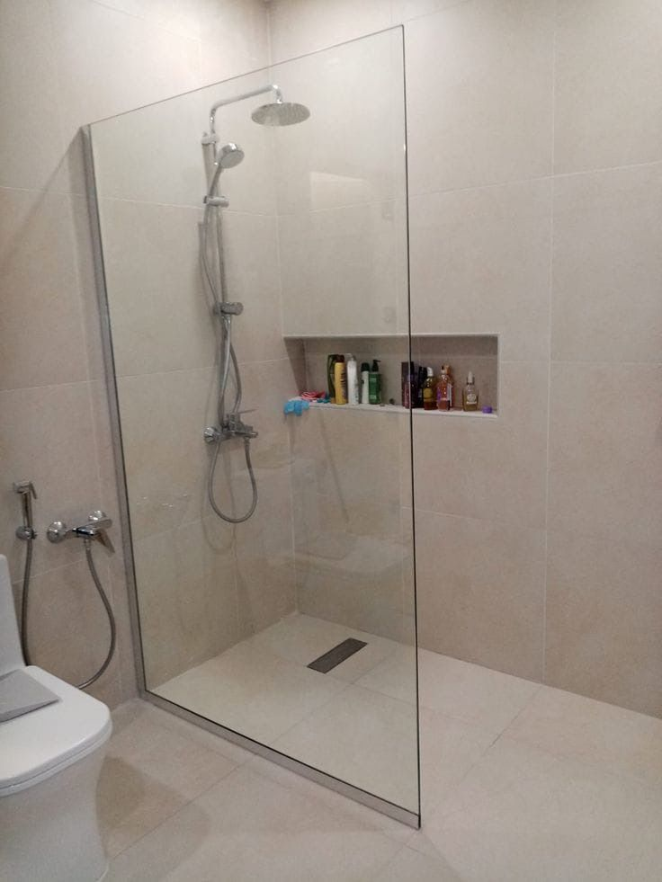
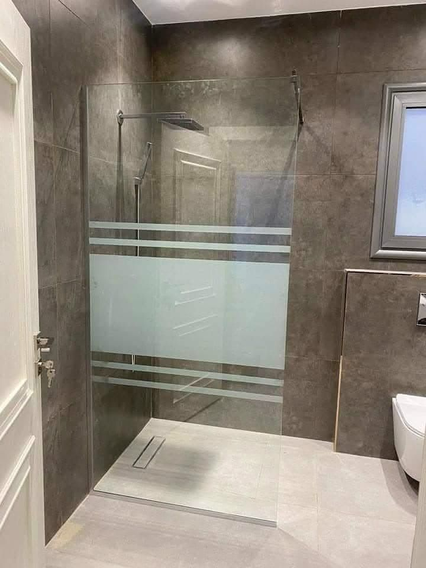
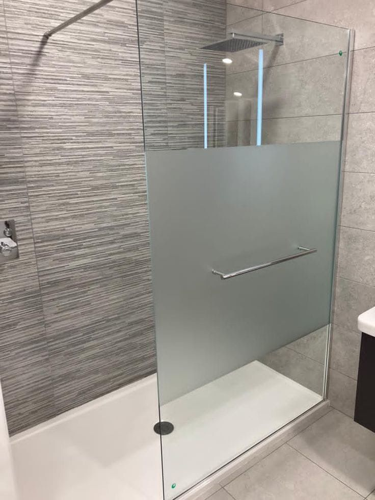

Balcon
Le cas le plus courant. Verre feuilleté, fixation par pinces ou spigots inox 304 dans la dalle ou en applique sur le nez de dalle.
Garde-corps en verre · sur mesure
Un garde-corps en verre sécurise sans fermer. Il laisse passer la lumière, garde la vue dégagée et ne rouille pas. Nous les fabriquons sur mesure, au millimètre, après un relevé chez vous — et nous les posons nous-mêmes.
Configurations
Chaque panneau est mesuré chez vous, fabriqué puis posé sur mesure — au millimètre près.

Le cas le plus courant. Verre feuilleté, fixation par pinces ou spigots inox 304 dans la dalle ou en applique sur le nez de dalle.

Sur les terrasses exposées, la fixation compte autant que le verre. En bord de mer nous posons systématiquement de l'inox 304, qui résiste à la corrosion marine et aux embruns.

Le plus technique : chaque panneau suit la pente, aucune cote n'est identique. C'est là que le relevé sur place fait la différence.
Le verre
Les deux sont des verres de sécurité, mais ils ne cassent pas de la même façon. Le trempé se fragmente en granulés non coupants. Le feuilleté est composé de deux verres liés par un film intercalaire : s'il casse, les morceaux restent collés au film et le panneau tient en place. C'est ce comportement qui le rend préférable dès qu'il y a une hauteur de chute. Nous vous orientons selon la configuration lors du relevé.
Quincaillerie
Trois systèmes, choisis selon le rendu et le support relevé sur place.
Fixation au sol, rendu minimaliste.
Fixation latérale ou frontale.
Rendu continu, sans pièce apparente.
Tarifs
Prix indicatif de départ, hors options. L'estimation exacte est donnée après la prise de mesure gratuite à domicile.
à partir de 1 490 DH / ml
Processus
De l'échange initial à la pose finale, nous encadrons chaque étape, du premier contact au dernier réglage.
Échange sur votre projet, la configuration (balcon, terrasse, escalier) et le type de verre souhaité.
Déplacement à domicile pour un relevé précis et la validation technique du support.
Découpe et façonnage du verre sur mesure, selon les cotes relevées.
Pose soignée par notre équipe sous 72 heures maximum après validation des cotes.
Questions fréquentes
Zone d'intervention
Bouznika, Témara, Rabat, Salé, Kénitra, Mohammedia et les environs.
Contact
Décrivez votre projet : on revient vers vous rapidement pour organiser une prise de mesure gratuite à domicile.
Envoyez vos dimensions et une photo de l'emplacement. On vous répond avec une estimation, puis on organise la mesure gratuite.
Obtenir mon estimation sur WhatsAppVous préférez l'e-mail ? Écrivez-nous.
Prise de mesure à domicile gratuite et sans engagement.